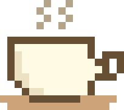

User test · Philocafé
Share a talk from the café
Philocafé is a little café where you sit down with an AI philosopher and talk through what’s on your mind. Have a chat, then paste it here. It takes a few minutes and it’s anonymous.
Open Philocafé
Pick a philosopher and talk about anything: a choice you’re stuck on, a question you can’t let go of, a feeling that’s hard to name. Talk for as long as you like.
If the café asks for an access code, ask the classmate who invited you.
This is a test version, and our team will read what you share. Only share what you’re comfortable with us seeing. If you’re going through something really hard right now, please reach out to someone who can help: in the US, call or text 988. In an emergency, call 911.
When you’re done, tap Copy chat above the message box. The whole conversation is copied.
If copying doesn’t work, press and hold each message to copy it.
Thank you!
Your conversation is with the team now. Thanks for taking the time.
Talked with someone else too? You can share that one as well.